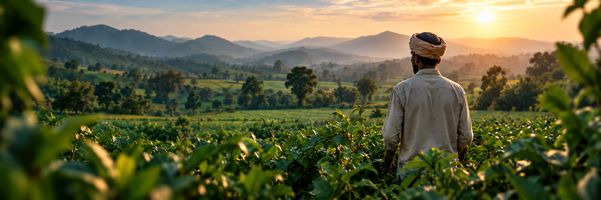
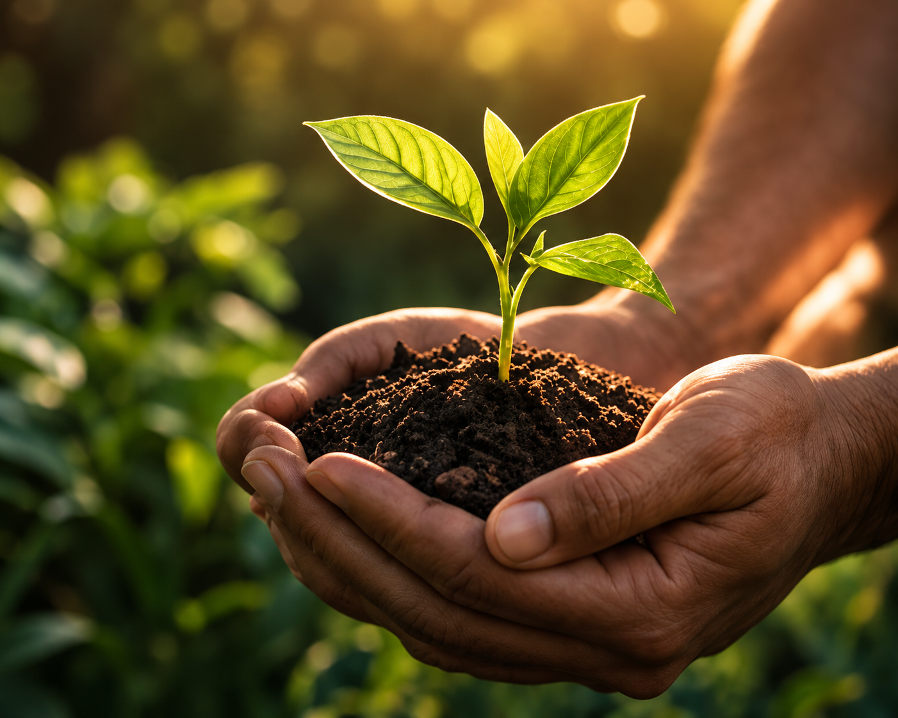
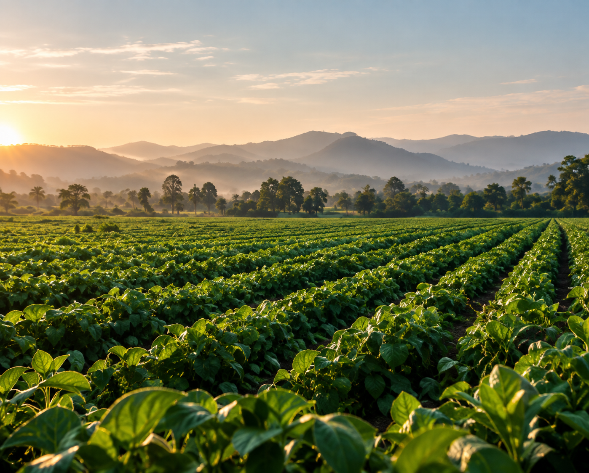
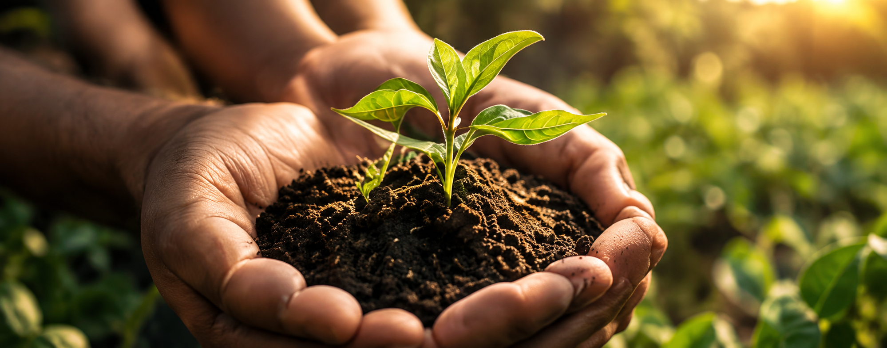
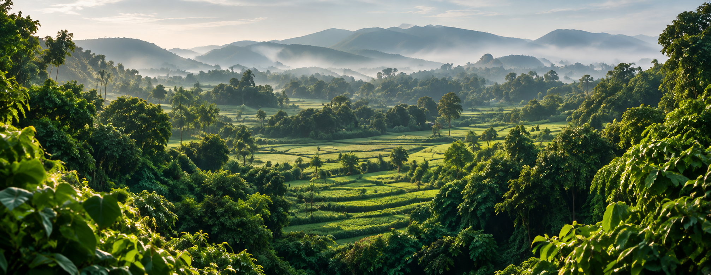
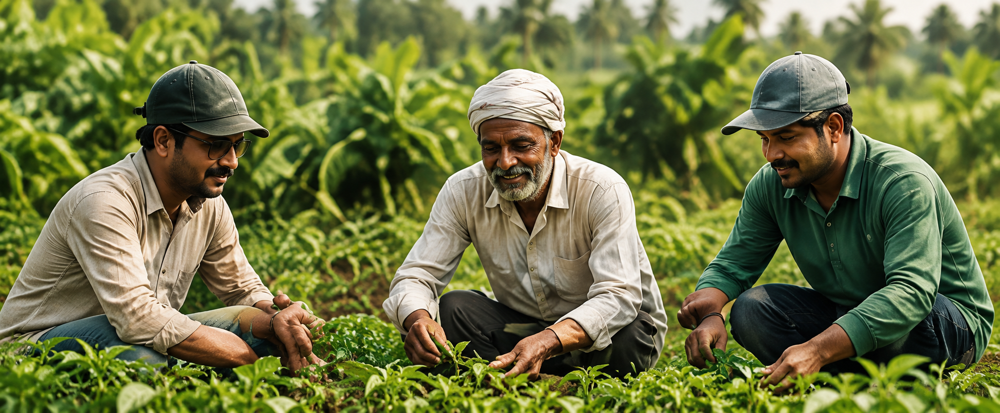

About Far Overseas
Bridging
Indian Roots to a
Healthier World.
We are an India-based international trade and sourcing company delivering natural, high-quality and sustainably sourced agricultural ingredients to global markets.
Who We Are
More Than a Business,
A Shared Belief.
Far Overseas is a leading sourcing and export partner for agricultural commodities and food products. We work closely with farmers, processors and global buyers to deliver authentic, high-quality products with full traceability, ethical practices and reliable supply.
With deep knowledge of international trade regulations, logistics and quality standards, we ensure a seamless farm-to-port journey — bringing the best of India to the world.
Our Journey
Pure Origins.
Global Possibilities.

Sourced with Care
From India's fertile lands to the world's tables.
Our Vision
To build a trade-first organization based on ownership, trust and responsibility — staying close to the source and customer, while creating a transparent, resilient and long-term global trade ecosystem.
Our Mission
To responsibly source, supply and deliver high-quality agricultural products with complete control over quality, compliance, and execution, while building transparent and reliable relationships with our producers and customers.
Our Philosophy
Customer satisfaction is at the heart of everything we do. We focus on delivering quality products, on time, with strict quality checks before they reach our customers.
Why Choose Far Overseas
Built on Trust.
Backed by Experience.
With over a decade of experience, we have continuously raised our operating standards through well-defined SOPs aligned with global food-safety practices, ensuring better efficiency and superior product quality.
Organic &
Sustainable
Qualified Professionals
& Experts
Steam Sterilization
Unit
Global
Presence
Purity and Superior
Quality
Farm to Fork
Traceability
State of Art Processing
Technology
Quality
Exports
Our Commitment
Building a Future with
Sustainable Organic Farming.
We believe in responsible growth — supporting farmers, protecting biodiversity and promoting environmentally conscious food systems for generations to come.

Organic Production
We promote non-GMO seeds, avoid synthetic chemicals, and support organic produce while ensuring fair pricing and better livelihoods for farmers.

Local Sourcing & Biodiversity
We source ingredients from their regions of origin, work with farming groups and cooperatives, and encourage biodiversity and sustainable agricultural systems.

Training & Support
We train and support farmers in organic farming methods, natural fertilizers, soil health, biodiversity and long-term good agricultural practices.
Our Supply Chain
From Indian Farms to
Global Tables.
We work with 45,000+ organic farmers, cultivating non-GMO crops without pesticides across 40,000 hectares. Our supply chain is built on strong relationships, transparent processes and collaborative partnerships — ensuring quality, consistency and responsible trade from source to destination.
Our ProcessLet's Grow Together
Partner for a Healthier,
More Sustainable Tomorrow.
Get in touch with us for product inquiries, partnerships or custom requirements.